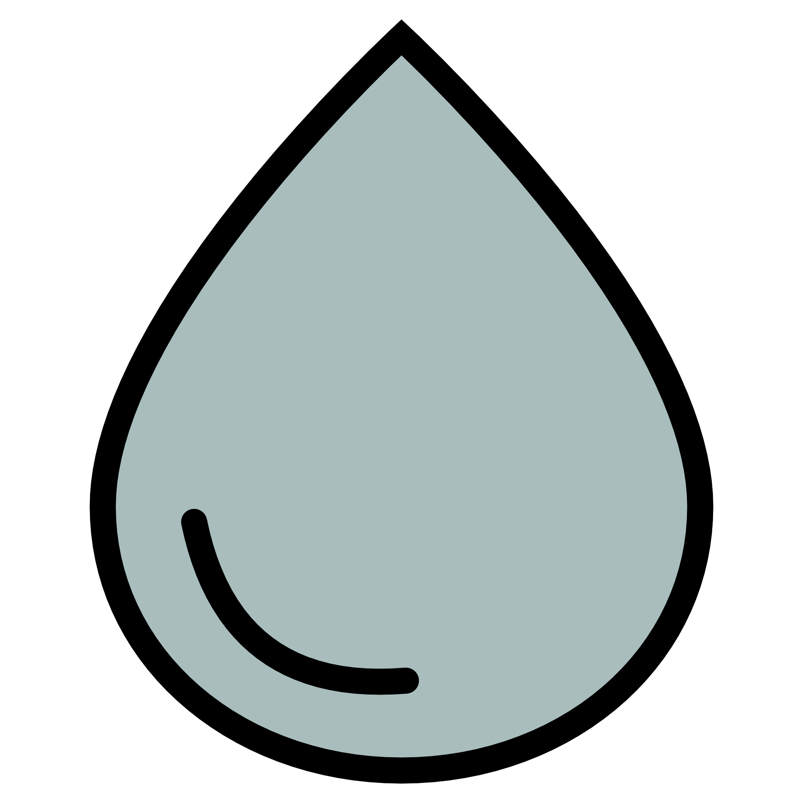
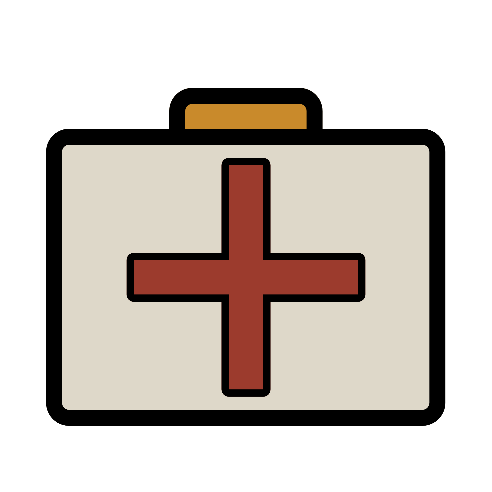
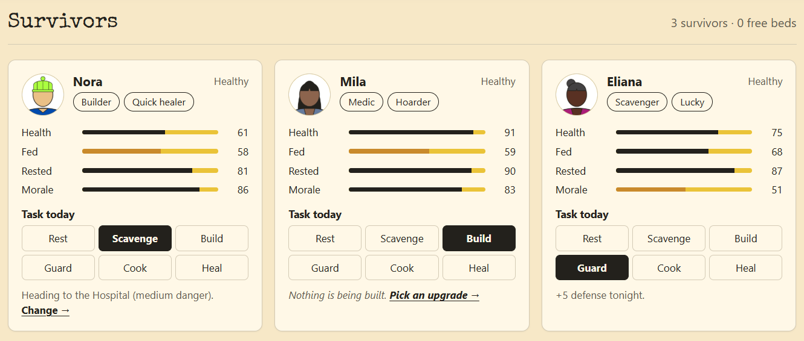
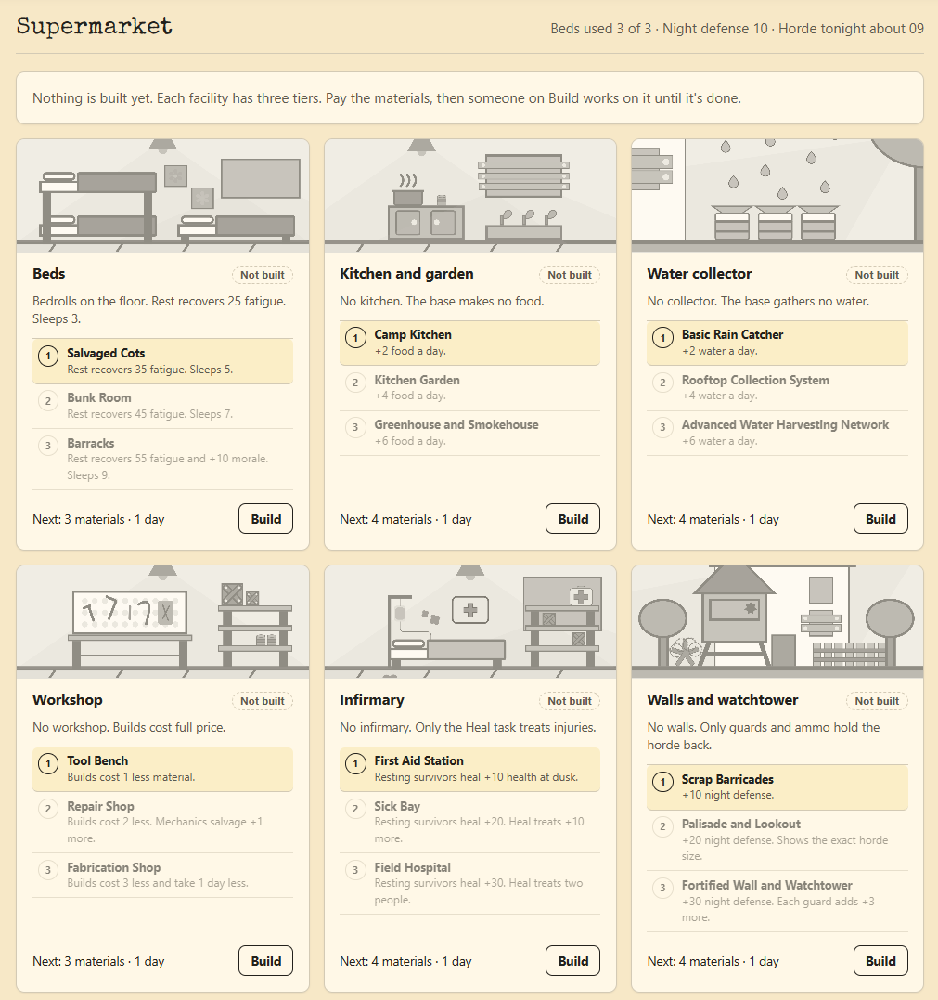
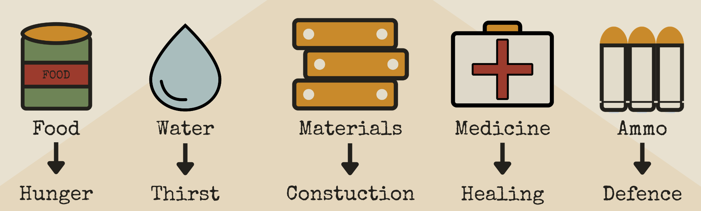
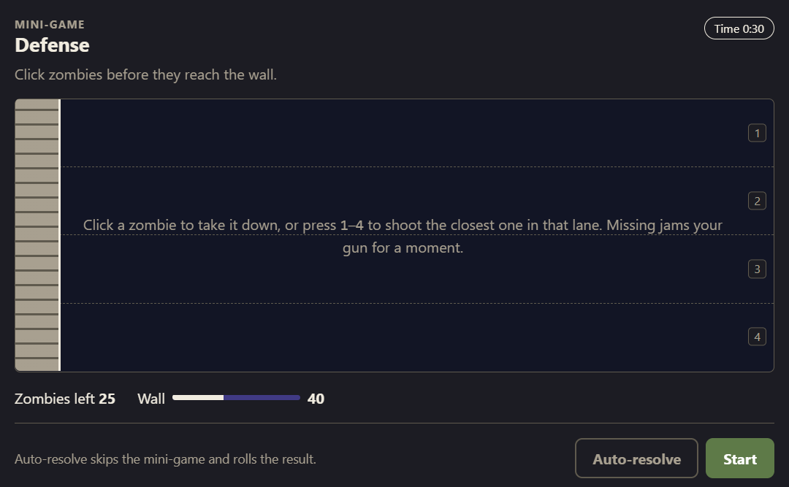
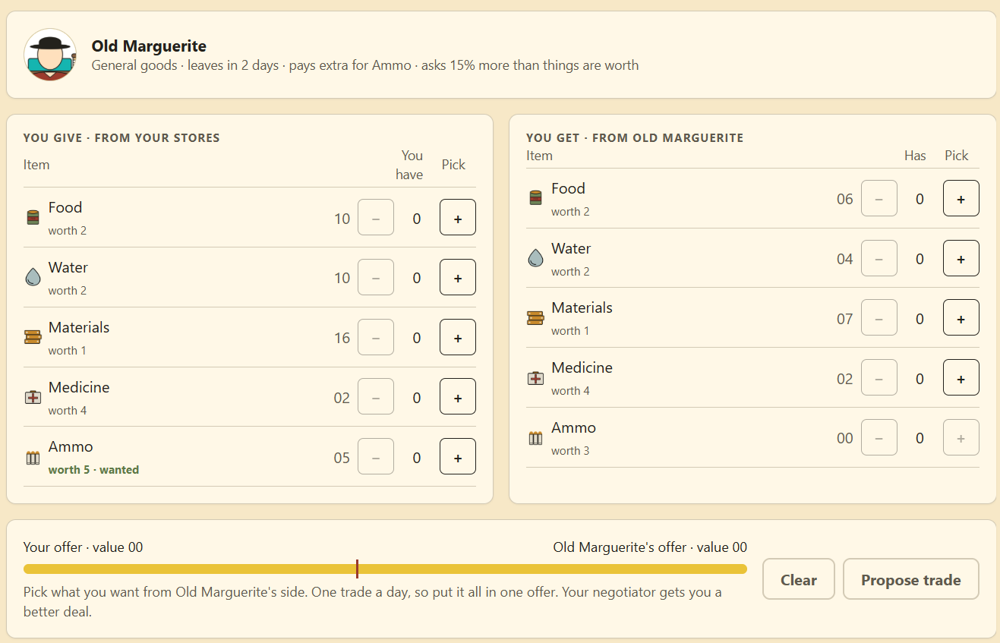
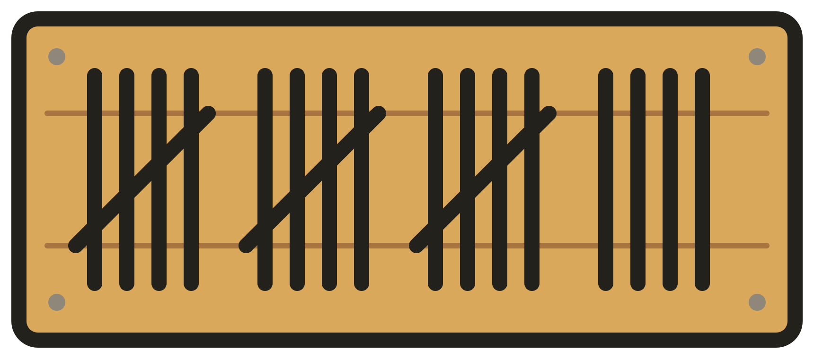
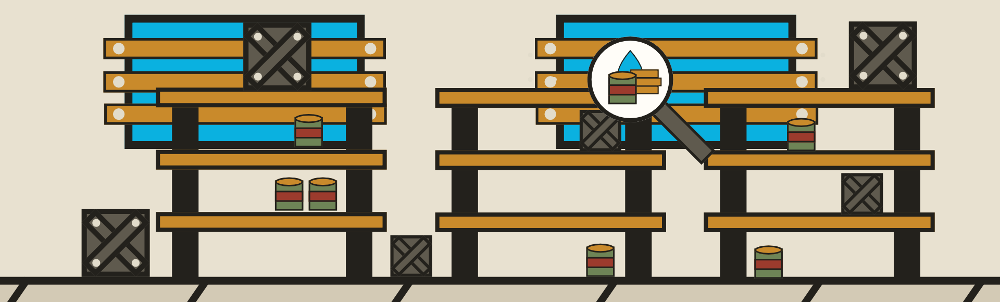

How to play
What is the goal of Another Tally?
The goal of Another Tally is to lead a group of survivors through a zombie apocalypse. You must manage resources, make strategic decisions, and keep your survivors alive as long as possible. Survive until the end to win the game, but can you make it that far?
You lose when no one is left. Survivors die when their health reaches 0, from hunger, thirst, injuries on scavenging trips, or the horde breaking through at night. Additionally, a survivor whose morale drops to 0 gives up and leaves the group.
Please note that Another Tally is a turn-based game, and each turn represents a day in the life of your survivors. You will need to be carefully plan your actions and make the most of each day to ensure the survival of your group.
Please note, the game only exists in the current browser tab's memory. If you refresh the page, close the tab, or open the game in a new tab, your current run will be lost. Make sure to finish your run before doing any of these actions!
Turns in the game.
-
The Dawn Report
In this window, you'll see the results of the previous night's events. Then you carve the new day's tally mark on the wall (the Tally mini-game). Some mornings, something happens before the day starts and you'll have an additional choice to make.
-
Day
During the day, you can assign survivors to tasks, manage resources, and make strategic decisions to keep your group alive.
-
Dusk
At dusk, scavengers come home with what they found (unless they're on a 2-day trip), the base produces food and water, construction moves forward, and the group eats and drinks. Going without food or water hurts.
-
Night
Every night brings an event you must answer. Then the horde attacks the walls, and your night defense decides whether they hold.
Resources
-
 Food
Food
Each survivor eats 1 food at dusk. Short rations raise everyone's hunger (the shorter you are, the more) and lower morale. At 80 hunger, survivors start losing health every day. Kitchen and garden upgrades make 2 or 3 food a day each, and big stockpiles spoil without a Root Cellar. -

Water
Each survivor drinks 1 water at dusk. Running short costs health right away, shared across the group: the shorter you are, the more everyone loses. Water is the most urgent resource. Water supply upgrades gather 1 to 3 water a day each. -
 Materials
Materials
Building facility upgrades costs materials. Nothing is built at the start, and a Workshop makes every build cheaper. A Reloading Bench turns them into ammo. -

Medicine
An Herb Garden grows a little. A survivor on Heal uses 1 medicine to treat the most injured person. Without medicine, only someone with real training can help, and only a little. -
 Ammo
Ammo
Ammo adds to your night defense (up to 10 counts), but only when someone is on Guard to fire it. Each guard uses 1 ammo every night, so keep restocking.

Survivors and base
Each survivor has health, hunger, fatigue and morale, plus one skill and one trait. Every day, give each survivor one task on the Survivors tab.
Your three starting survivors are rolled at random on the New Game page. Keep them, roll again, or change a survivor's portrait, name, skill, trait and voice.
On the Survivors tab every bar reads "full is good": hunger shows as Fed and fatigue as Rested. Bars turn amber, then red, as they run low. Under each survivor's task, a line says what that task will do today, and the Today panel flags anything that won't work before you end the day.
| Task | What it does |
|---|---|
| Rest | Lowers fatigue by 25, raises morale by 3 and heals 5 health. Beds upgrades recover more, and an Infirmary heals more. |
| Scavenge | Brings back supplies from a place you pick on the survivor's card or on the Map tab. Tiring and sometimes dangerous. |
| Build | Needed to start and finish upgrades. Each upgrade takes the number of days shown on its card. |
| Guard | Adds night defense and fires your ammo, using 1 a night. Some survivors are better at it than others. |
| Cook | Cooks the group's dinner. Whether that saves anything depends on who's cooking. |
| Heal | Treats the most injured survivor using 1 medicine: +10 health, more in trained hands. A Sick Bay adds 10 more, and a Field Hospital treats two people. |

Every task except Rest adds fatigue. A survivor at 80 fatigue or more is too tired to scavenge, guard or build, so plan rest days.
The days wear on everyone. Each dusk, everyone at the shelter loses 3 morale, 3 more while they're hungry (60 hunger or more) and 2 more while they're injured. Resting, a clean tally mark, good events, newcomers and some facilities give it back. A survivor under 30 morale is shaken: they find 1 less when scavenging and add 3 less defense on Guard. At 0 they leave. A full meal only takes 10 hunger off, so a few short days take a while to recover from.
Facilities at the base cover those needs. On every difficulty you start with nothing built. Instead of fixed tiers, each facility has a handful of small upgrades, and you can't have them all:
- Some need others first. A Bunk Room needs Salvaged Cots; a Cistern needs a Rooftop Catchment or a Well.
- Some are either/or. Pick a Quiet Room or a Common Room, a Smokehouse or a Root Cellar, a Sick Bay or an Herb Garden, a Fabrication Shop or a Reloading Bench, a Fortified Wall or Gun Nests. Once one is built or started, the other is gone for the run.
- Room is limited. The roof holds 2 upgrades, the yard 3 and the basement 2, shared between every facility. The Base tab shows how full each one is.
An upgrade is paid for up front in materials and only moves forward on days when a rested survivor is on Build. Each facility works on one upgrade at a time, but different facilities can build at once. A finished upgrade works from the next day. Costs below are before discounts: the right person on Build can save materials, and the Workshop saves up to 3 more (never below 1).
| Upgrade | What it gives | Cost | Needs, room and choices |
|---|---|---|---|
| Beds · without it: Bedrolls on the floor. Rest recovers 25 fatigue. Sleeps 3. | |||
| Salvaged Cots | Sleeps 2 more. Rest recovers 10 more fatigue. | 3 materials, 1 day | — |
| Bunk Room | Sleeps 2 more. | 4 materials, 1 day | Needs Salvaged Cots |
| Quiet Room | Rest recovers 15 more fatigue and 3 more morale. | 5 materials, 1 day | Needs Salvaged Cots. Takes room in the basement. Either/or with Common Room |
| Common Room | Everyone at the shelter gains 2 morale each dusk. | 5 materials, 1 day | Needs Salvaged Cots. Either/or with Quiet Room |
| Barracks | Sleeps 3 more. | 6 materials, 2 days | Needs Bunk Room |
| Kitchen and garden · without it: No kitchen. The base makes no food. | |||
| Camp Kitchen | +2 food a day. | 4 materials, 1 day | — |
| Vegetable Beds | +2 food a day. | 4 materials, 1 day | Needs Camp Kitchen. Takes room in the yard |
| Rooftop Greenhouse | +3 food a day. | 6 materials, 2 days | Needs Camp Kitchen. Takes room on the roof |
| Smokehouse | +2 food a day. | 4 materials, 1 day | Needs Camp Kitchen. Takes room in the yard. Either/or with Root Cellar |
| Root Cellar | Food stops spoiling, and the group eats 1 less at dusk. | 4 materials, 1 day | Needs Camp Kitchen. Takes room in the basement. Either/or with Smokehouse |
| Chicken Coop | +2 food a day and 1 morale for everyone each dusk. | 5 materials, 1 day | Needs Vegetable Beds or Rooftop Greenhouse. Takes room in the yard |
| Water supply · without it: No water supply. The base gathers no water. | |||
| Rain Barrels | +2 water a day (less in a dry spell). | 3 materials, 1 day | — |
| Rooftop Catchment | +3 water a day (less in a dry spell). | 6 materials, 2 days | Needs Rain Barrels. Takes room on the roof |
| Hand-dug Well | +2 water a day, even in a dry spell. | 5 materials, 2 days | Needs Rain Barrels. Takes room in the yard |
| Charcoal Filter | +1 water a day, and no more bad water. | 3 materials, 1 day | Needs Rain Barrels |
| Cistern | +2 water a day. | 6 materials, 2 days | Needs Rooftop Catchment or Hand-dug Well. Takes room in the basement |
| Workshop · without it: No workshop. Builds cost full price. | |||
| Tool Bench | Builds cost 1 less material. | 3 materials, 1 day | — |
| Repair Shop | Builds cost 1 less again, and salvage goes further. | 5 materials, 1 day | Needs Tool Bench |
| Bike Rack | Scavenging trips cost 5 less fatigue a day. | 4 materials, 1 day | Needs Tool Bench. Takes room in the yard |
| Fabrication Shop | Builds cost 1 less again and take 1 day less. | 8 materials, 2 days | Needs Repair Shop. Takes room in the basement. Either/or with Reloading Bench |
| Reloading Bench | Turns 1 material into 1 ammo every dusk. | 6 materials, 2 days | Needs Repair Shop. Takes room in the basement. Either/or with Fabrication Shop |
| Infirmary · without it: No infirmary. Resting survivors heal 5 health at dusk. | |||
| First Aid Station | Resting survivors heal 5 more health. | 4 materials, 1 day | — |
| Sick Bay | Resting survivors heal 5 more. Heal treats 10 more. | 6 materials, 2 days | Needs First Aid Station. Either/or with Herb Garden |
| Herb Garden | Makes 1 medicine every 2 days. | 4 materials, 1 day | Needs First Aid Station. Takes room in the yard. Either/or with Sick Bay |
| Field Hospital | Heal treats two people. Resting heals 5 more. | 8 materials, 2 days | Needs Sick Bay |
| Apothecary | 1 more medicine every 2 days. Heal treats 5 more. | 6 materials, 2 days | Needs Herb Garden |
| Walls and watch · without it: No walls. Only guards and ammo hold the horde back. | |||
| Scrap Barricades | +10 night defense. | 4 materials, 1 day | — |
| Palisade | +10 night defense. | 6 materials, 2 days | Needs Scrap Barricades |
| Lookout | Shows the exact horde size. Each guard adds 2 more. | 3 materials, 1 day | Needs Scrap Barricades. Takes room on the roof |
| Spike Pit | +6 night defense. | 4 materials, 1 day | Needs Scrap Barricades. Takes room in the yard |
| Fortified Wall | +10 night defense, and breaches can't damage the walls. | 9 materials, 2 days | Needs Palisade. Either/or with Gun Nests |
| Gun Nests | Each guard adds 4 more. Up to 15 ammo counts. | 7 materials, 2 days | Needs Palisade. Either/or with Fortified Wall |
Food piles up, but it doesn't keep: each dusk, a tenth of the food above 12 spoils, unless you have a Root Cellar. Rain Barrels and the Rooftop Catchment make half as much water in a dry spell; a Well doesn't care about the weather.

Scavenging
The city has 14 places to scavenge in four districts. There are two ways to send someone: pick Scavenge on their card and choose a destination from the list right there, or select a place on the Map tab and click the survivors who should go (click again to call them back). They come back at dusk with the kinds of supplies listed for that place.
| Place | Finds | Danger | Trip |
|---|---|---|---|
| Downtown | |||
| Hospital | Medicine, food | Medium | 1 day |
| Police station | Ammo, medicine | High | 1 day |
| Pharmacy | Medicine, bottled water. Small place. | Medium | 1 day |
| Church | Food, medicine. People shelter here. Small place. | Low | 1 day |
| Riverside | |||
| Supermarket | Food, water | Medium | 1 day |
| Hardware store | Materials | Medium | 1 day |
| Sporting goods | Ammo, food. Small place. | Medium | 1 day |
| Waterworks | Water, materials | Medium | 2 days |
| Westside | |||
| Gas station | Materials, bottled water | Low | 1 day |
| Farm | Food, water | Low | 2 days |
| Suburb | Materials, food | Low | 1 day |
| Southside | |||
| School | Materials, food | Low | 1 day |
| Warehouse | Food, water, materials. Big site. | Medium | 1 day |
| Military checkpoint (starts locked) | Ammo, medicine | High | 2 days |
- Danger pays, and hurts. Each danger level adds to the haul, but also raises the chance your scavenger is attacked and how badly. Small places find 1 less, big sites 1 more.
- Places run dry. Each trip to the same place finds a little less, down to half of a fresh haul.
- Trips are tiring. Every day of travel adds 20 fatigue (less with a Bike Rack).
- Long trips keep people away. The farm, the waterworks and the military checkpoint are 2 days away. A survivor sent there leaves at dusk and comes back at dusk the next day with 2 extra supplies. While they're away they can't be given a task, don't eat or drink from your stores, and are safe from whatever hits the shelter.
- The military checkpoint starts locked. Select it on the Map to cut through the fence with materials (cheaper with someone handy at the shelter), or keep scavenging: an event near the checkpoint can turn up a keycard.
Around the city
Things happen in the city that last a few days: a fire closes Riverside, a horde settles in Downtown, a supply plane drops crates on the school, a dry spell, looters at the supermarket. They can close a place or a whole district, make it more or less dangerous, leave extra supplies, bring out more survivors, or make some night events more likely after a trip there. The Dawn report says when one starts, and the Map tab marks the places they touch (⛔ closed, ▲ more dangerous, ★ extra supplies) and lists everything going on under the map. Some night events only happen after someone comes home from a particular district.
New survivors
Your group can grow. Scavengers sometimes meet someone who wants to join, more often in places where people hide (the farm, the suburb and the school). Some events also bring people to your gate.
Every newcomer needs a free bed. You start with exactly enough beds for your group, so build the Beds facility to make room. Without a free bed, the stranger moves on. Newcomers arrive tired and a little hurt, with their own skill and trait, and everyone's morale rises a little when someone new joins.
Events
Every night brings one event, such as a stranger at the gate, a storm, raiders, or a fever in the shelter. Some only happen in the right situation: after someone came home from scavenging, while you have a free bed, while someone is hurt, once you've built something, later in the run, or because of a choice you made earlier. A few only happen once. The same event never comes twice in a row.
Each event gives you a few choices. A choice can need a rested survivor with a certain skill, cost supplies, or start a mini-game. The line under each choice tells you what it needs and what it does: whether it's risky, brings supplies, changes morale, or lets someone join. Some mornings bring a smaller event before the day starts.

Night raids
Every night the horde tests your walls, and it grows a little bigger each night until the last one. The Base tab shows your night defense and roughly how big tonight's horde will be.
| Night defense comes from | Amount |
|---|---|
| Walls and watch | 10 each for the Scrap Barricades, Palisade and Fortified Wall, 6 for the Spike Pit (none until built) |
| Each rested survivor on Guard | 5, more or less depending on who they are (3 less while shaken). +2 more each with a Lookout, +4 with Gun Nests |
| Ammo in stock | 1 per ammo, up to 10 (15 with Gun Nests), only while someone is on Guard to fire it |
The horde grows each night, and a bigger group draws more of them: +1 for every survivor at the shelter beyond the first three. If your defense is lower than the horde, it breaks through and injures a survivor. A big breach injures two and damages the newest part of your walls, which gives nothing until you repair it on the Base tab (half the cost, 1 day). A Fortified Wall can't be damaged. With a Lookout you see the exact size of tonight's horde instead of an estimate.

Trading
Wandering traders pass by your shelter. Each one stays for two or three days, then moves on, and a different trader shows up a few days later. The Trade tab shows how long the current trader is staying, or roughly when the next one is due.
| Trader | Sells mostly | Pays extra for |
|---|---|---|
| Old Marguerite, general goods | Food, water, materials | Ammo |
| Rook, gun runner | Ammo, materials | Food and water |
| Doc Ines, field medic | Medicine, water | Materials |
| Abe Tanner, farmer | Food, water | Ammo and medicine |
- Build an offer. Pick what you want from the trader's side and what you'll give from yours. The bar shows when the trader will accept.
- Sell what they want. Items a trader wants are worth 50% more to them, marked "wanted" on your side.
- One trade a day. Put everything into one offer.
- Prices depend on difficulty. On Normal and Hard, traders ask for more than their goods are worth. Who's in your group can change what they ask.
Difficulty
Pick a difficulty and run length when you start a new game. Longer runs end against a bigger horde, and give you more nights to run out of supplies.
| Easy | Normal | Hard | |
|---|---|---|---|
| Starting supplies | Plenty | Some | Very few |
| Scavenging hauls | Full | Smaller | Smallest |
| Danger while scavenging | Low | Medium | High |
| Hunger and thirst damage (with nothing left) | 10 a day | 15 a day | 20 a day |
| Trader prices | Fair | 15% extra | 30% extra |
| Days between traders | 2–3 | 3–4 | 4–6 |
| Auto-resolved mini-games won | 70% | 55% | 40% |
Skills and traits
Every survivor has one skill and one trait. Some skills help with a task or unlock event choices, and some were useful before the world ended. Traits can help, hurt, or just be who someone is. All you get is the description; the rest you find out by watching your group.
Mini-games
Some event within Another Tally can only be completed by playing a short mini-game. These mini-games can be turned off in Options to auto-resolve them instead.

Tally
Every dawn you carve the new day's mark on the shelter wall. Stop the sweeping blade over the marked spot (Space, Enter or a click) within three tries. A clean mark lifts everyone's morale (more for every fifth mark, the slash); a slip leaves a crooked mark and lowers it a little. Your marks become the Final Tally at the end of the run.

Lockpick
Some loot is locked and requires a lockpick to open. This mini-game tests your dexterity and timing to open the lock.

Defense
Ammo is needed to hold off night raids. Improvements to the base can help, but you will still need to defend it.

Search
An important part of scavenging is finding supplies. This mini-game tests your ability to search effectively.
Controls
The game can be played with either a mouse or keyboard. The following table shows the controls for each input method.
| Action | Mouse | Keyboard |
|---|---|---|
| Move between controls | — | Tab |
| Switch game tabs | Click a tab | Left and Right arrows |
| Select | Click | Enter or Space |
| Pause | Pause button | Esc |
| Show text that's still typing | Click the text | — |